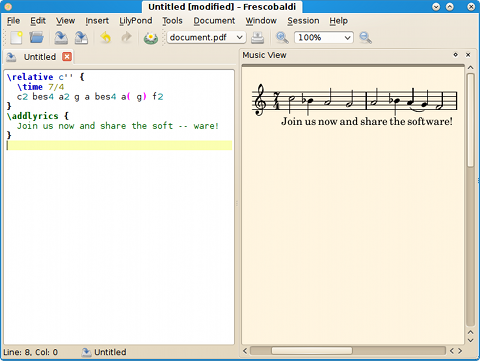

Manual de Frescobaldi
Frescobaldi es un editor ligero y potente para documentos de partitura de LilyPond. Este manual está escrito por Wilbert Berendsen y es la documentación de Frescobaldi versión 2.0.5.
Traducido por Francisco Vila.
Cómo obtener ayuda en Frescobaldi
En muchos diálogos puede pulsar sobre un botón Ayuda o sobre la tecla F1. Muchos elementos de la interfaz de usuario también tienen información de "Qué es esto" que se puede revelar pulsando Shift+F1 o seleccionando Ayuda→Qué es esto.
Índice general
- Introducción
- Iniciación
- Asistente de partitura
- La vista de música
- Herramientas adicionales
- Panel de inserción rápida
- Fragmentos de código
- Editor de fragmentos de código
- Mantenimiento de una biblioteca de fragmentos de código
- Importación y exportación de fragmentos de código
- Manipulación de alturas
- Manipulación de las duraciones
- Letra
- El editor
- Preferencias
- Preferencias generales
- Preferencias de LilyPond
- Ajustes de MIDI
- Aplicaciones complementarias
- Rutas
- Documentación de LilyPond
- Combinaciones de teclas
- Tipografías y colores
- Herramientas
- Solución de problemas
- Después de tipografiar la partitura, no aparece en la vista de música
- ¿Cómo se genera un archivo MIDI?
- Acerca de Frescobaldi
- Índice general
Introducción
⬀LilyPond es un programa de tipografía musical libre y de código abierto, que produce impresiones de partituras de muy alta calidad a partir de archivos de entrada sencillos. Esots archivos de texto se pueden crear con cualquier editor de texto, y después LilyPond carga este archivo y produce una hermosa partitura, que de forma predeterminada está en formato PDF.
Frescobaldi es una aplicación diseñada para hacer más rápida y fácil la edición de partituras musicales de LilyPond. Usted debe aprender el lenguaje de entrada de LilyPond. Si lee la sección Iniciación de esta guía del usuario, encontrará también algunos conceptos básicos de LilyPond.
Después puede seguir aprendiendo mediante el Manual de Aprendizaje que forma parte de de la excelente ⬀Documentación en línea de LilyPond.
Iniciación
La pantalla predeterminada de Frescobaldi muestra un documento de texto a la izquierda y una vista previa vacía de música a la derecha.
Ahora, en la vista de texto, escriba un código de LilyPond, como el siguiente:
\relative c'' { \time 7/4 c2 bes4 a2 g a bes4 a( g) f2 } \addlyrics { Join us now and share the soft -- ware! }
A continuación, pulse sobre el botón del nenúfar de la barra de herramientas o la tecla Ctrl+M. Si todo está correcto LilyPond se inicia y procesa su archivo. En la parte inferior de la pantalla puede seguir los avances de LilyPond. Si LilyPond no encuentra ningún error por su parte, produce un archivo PDF que se muestra en la vista previa de música:

La vista de música tiene muchas posibilidades:
- Al pasar por encima de las notas y otros objetos se resaltarán en el texto; al pulsar sobre los objetos el cursor se moverá a su código correspondiente.
- Use Ctrl-rueda para alterar el grado de ampliación. La ampliación se centrará en el puntero del ratón.
- Haga Ctrl-clic sobre un lugar vacío para mostrar una lupa de ampliación
- Mueva el cursor de texto o selecciones texto para destacar las notas sobre la vista previa; pulse la tecla Ctrl+J para centrar explícitamente y destacar una nota u otro objeto de la vista previa.
- Pulse Mayúsculas y arrastre una selección y después pulse Ctrl+Shift+C o elija Editar→Copiar a imagen... para copiar la música seleccionada como una imagen de mapa de bits al portapapeles, a un archivo o a otra aplicación.
Si su música está terminada, se recomienda ejecutar LilyPond una vez más con los enlaces de las notas desactivados: menú LilyPond→Procesar (publicación). Esto produce documentos PDF mucho más pequeños.
Si LilyPond no se inicia en absoluto, compruebe que ha instalado LilyPond correctamente y que la instrucción lilypond está dentro de la variable de entorno PATH de su sistema. Si es necesario, proporcione la ruta exacta a su ejecutable de LilyPond bajo Editar→Preferencias→Preferencias de LilyPond.
Si LilyPond encuentra errores en su documento, se mostrarán en el registro, y Frescobaldi marcará las líneas de su documento en que se encontraron los errores. Al pulsar sobre el error en el registro o pulsando la tecla Ctrl+E llevará el cursor de texto inmediatamente al lugar problemático. Al pulsar la tecla Ctrl+E de nuevo, el cursor se desplazará al siguiente mensaje de error y así sucesivamente. Cuando ejecute LilyPond nuevamente, se eliminarán las marcas de líneas de error. Puede quitar manualmente las marcas de líneas de error con la opción Ver→Borrar marcas de error.
Asistente de partitura
El Asistente de partitura (Ctrl+Shift+N) en Herramientas→Preparar partitura nueva... está diseñado para preparar una partitura musical de LilyPond rápidamente.
En la primera solapa, Títulos y Encabezamientos, puede escribir títulos.
En la segunda solapa, Partes, puede componer su partitura a partir de muchos tipos de parte disponibles. Haga doble clic sobre un tipo de parte para añadirla a su partitura (o pulse el botón Añadir). Seleccione la parte en la lista de la partitura para cambiar algunos ajustes de la parte seleccionada, si lo desea. Muchas partes, especialmente las corales, tienen opciones muy potentes para la preparación de la partitura de la forma en que desee hacerlo.
En la tercera solapa, Ajustes de la partitura, se pueden ajustar las propiedades y preferencias globales de la partitura.
Pulse sobre el botón Vista previa para obtener una previsualización con algo de música de relleno. Pulse Aceptar para copiar el texto fuente de LilyPond generado al editor.
Varias piezas o movimientos
Una funcionalidad especial muy potente de la solapa Partes se encuentra oculta en la categoría "Contenedores" de la lista de tipos de parte.
Esta categoría contiene los tipos de Partitura, Libro y Partes de libro, con las que puede preparar un documento de LilyPond que contenga varias partituras o incluso libros. Puede añadir elementos de Partitura, Parte de libro o Libro a la vista de Partitura. Se pueden anidar unos dentro de otros: se puede añadir una Partitura a una Parte de libro o a un Libro pero no se puede añadir un Libro a una Parte de libro o a una Partitura.
A continuación puede añadir partes musicales. Si quiere crear varias partituras con las mismas partes exactamente, puede limitarse a añadir las partes en el nivel superior de la vista de partitura, y después las partituras, sin añadir partes musicales a las partituras. Las partituras usarán las partes que haya puesto en el nivel superior.
La vista de música
La vista de música muestra el documento PDF creado por LilyPond.
Cuando LilyPond se ha ejecutado en el modo de vista previa (o sea, con la opción Apuntar y Pulsar activada), el PDF contiene en cada objeto musical un enlace que apunta a su definición en el documento de texto.
La vista de música usa esta información para aportar una integración inteligente y en los dos sentidos con el documento de texto:
- Mueva el ratón sobre los objetos musicales para hacer que se resalten sobre el texto
- Pulse sobre un objeto para mover el cursor de texto a ese objeto
- Pulse con mayúsculas un objeto para editar su texto en una pequeña ventana (véase Editar en el mismo lugar)
- Mueva el cursor de texto para resaltar los objetos en la vista de música, pulse Ctrl+J para hacerlos visibles en el centro de la página actual dentro de la vista de música.
También puede ajustar la vista:
- Use la tecla Control (o Command) con la rueda del ratón para acercar o alejar
- Mantenga pulsada la tecla Control o Command y pulse con el botón izquierdo para mostrar una lupa
- Configure el color de fondo bajo Editar→Preferencias→Tipografías y colores→Colores básicos→Fondo de la vista previa
Puede copiar música directamente desde la vista de PDF hacia una imagen de píxeles: mantenga pulsada la tecla Mayúsculas y arrastre el puntero para seleccionar un rectángulo (o use el botón derecho del ratón) y después pulse Ctrl+Shift+C o elija Editar→Copiar a imagen... para copiar la música seleccionada como una imagen de píxeles al portapapeles, a un archivo o a otra aplicación.
Véase también: Editar en el mismo lugar, Después de tipografiar la partitura, no aparece en la vista de música
Herramientas adicionales
Otras herramientas importantes están relacionadas aquí.
Panel de inserción rápida
Con las herramientas del Panel de inserción rápida, puede añadir varios elementos musicales a la nota actual o a la música seleccionada.
El especificador de Dirección determina si las articulaciones, matices dinámicos o ligaduras de expresión
aparecen en una posición neutra (es decir, determinada por la dirección de las plicas), o por encima
o debajo del pentagrama mediante la anteposición de un símbolo -, ^ o
_.
Pulse sobre una solapa para seleccionar una herramienta. Puede recorrer circularmente la lista de solapas para elegir una herramienta. Puede recorrer circularmente la lista de herramientas con Ctrl (o ⌘) y la rueda del ratón. Todos los botones del Panel de inserción rápida tienen combinaciones de tecla configurables; puede cambiarlas mediante una pulsación con el botón derecho sobre un botón.
Articulaciones
Estos símbolos musicales se pueden añadir a una nota o silencio, o a un fragmento seleccionado de música. Si los añade a una selección, se saltarán los silencios. Se no hay ningún texto seleccionado, el cursor se moverá automáticamente a la siguiente nota, silencio, separación o acorde.
Si está seleccionado Permitir abreviaturas, Frescobaldi
usará símbolos abreviados para las articulaciones, si existen
(p.ej. -. en lugar de -\staccato).
Matices dinámicos
También se pueden añadir indicaciones dinámicas a una nota o silencio. Si selecciona un fragmento de música, puede añadir elementos extensos que terminan automáticamente en la última nota, silencio o acorde de la selección. Si a continuación pulsa sobre un signo, sustituirá al terminador.
Elementos extensos
Esta herramiento le permite añadir arpegios, glissandos y otros elementos extensos como ligaduras de expresión y de fraseo, barras manuales y trinos.
Los arpegios y glissandos se aplican a la nota actual; no requieren que se seleccione ningún fragmento de música. Las ligaduras, barras o trinos se aplican a la nota actual y a la siguiente si no hay ninguna selección de música, o a la primera y la última nota o acorde de la selección.
Líneas divisorias
Aquí puede insertar barras de compás o diversos símbolos de respiración.
Fragmentos de código
Con el gestor de fragmentos de código puede almacenar piezas de texto usadas frecuentemente llamadas "fragmentos de código o snippets", y pegarlos fácilmente en el editor de texto.
El gestor de fragmentos de código se puede activar por medio del menú Insertar→Fragmentos de código... o pulsando la tecla Ctrl+T.
Los fragmentos de código se pueden buscar navegando por la lista o escribiendo algunos caracteres en el cuadro de búsqueda. Los fragmentos de código pueden tener también una combinación de teclas que los aplica directamente. Ciertos fragmentos de código tienen una combinación nemotécnica especial (nombre abreviado) que puede también teclear en el cuadro de búsqueda para seleccionar el fragmento. Al pulsar la tecla Intro aplicará el fragmento en el editor y ocultará el gestor de fragmentos.
Añada fragmentos nuevos usando la tecla Ins. Edite el fragmento seleccionado con la tecla F2. Elimine los fragmentos seleccionados usando la tecla Ctrl+Del. Advertencia: ¡no hay función de Deshacer!
Los fragmentos se pueden poner también en el menú (véase Editor de fragmentos de código). Finalmente, hay fragmentos que pueden incluir o alterar el texto seleccionado. Algunos fragmentos hacen esto utilizando variables especiales, mientras que otros son pequeños guiones escritos en Python.
Editor de fragmentos de código
Aquí puede editar el texto del fragmento de código.
Si inicia la primera o primeras líneas con '-*- ' (observe el espacio), el resto de la línea o líneas define variables como nombre: valor; o simplemente nombre; lo que influye en el comportamiento del fragmento de código. Se pueden usar las siguientes variables:
menu- Poner el fragmento de código en el menú Insertar, agrupado por el valor (opcional).
template- Colocar el fragmento de código en el menú Archivo→Nuevo a partir de plantilla, agrupado por el valor (opcional). Cuando se activa por medio del menú, el fragmento de código se inserta en un documento nuevo.
name- Nombre corto nemotécnico para seleccionar el fragmento de código.
indent: no;- No aplicar sangrado automático después de la inserción.
icon- Icono que mostrar en el menú y la lista de fragmentos.
symbol- El símbolo que mostrar en el menú y en la lista de fragmentos de código. Los símbolos son iconos que usan el color del texto predeterminado y están en 'frescobaldi_app/symbols'.
python- Ejecutar el fragmento como un guión de Python. Véase Fragmentos de código de Python.
selection- Una o más de las palabras siguientes (separadas con espacios o comas):
yes: Requiere la selección de un texto.strip: Ajusta la selección de forma que no incluya los espacios inicial y final.keep: Selecciona todo el texto insertado.
Las otras líneas del fragmento de código definen el texto que se insertará en el editor. Aquí puede insertar variables prefijadas con un símbolo de dólar $. Un doble $ se sutsituirá con un solo $. Se reconocen los siguientes valores:
$ANCHOR- Selecciona texto desde aquí hasta la posición dada usando la variable
$CURSOR $CURSOR- Mueve aquí el cursor de texto después de la inserción.
$DATE- Fecha actual en formato AAAA-MM-DD.
$DOCUMENT_NAME- Nombre del documento actual.
$FILE_NAME- Nombre local completo del documento actual.
$FRESCOBALDI_VERSION- Versión de Frescobaldi.
$LILYPOND_VERSION- Versión del programa LilyPond predeterminado.
$SELECTION- El texto seleccionado, si está disponible. Si no, el cursor de texto se desplaza a este punto.
$URL- URL del documento actual.
Fragmentos de código de Python
Los fragmentos de código Python pueden leer y deben escribir la variable text. La variable text contiene el texto seleccionado actualmente (que puede ser una cadena vacía).
Puede fijar text a una cadena o a una lista de cadenas.
Se pueden referenciar otras variables:
state- Lista de cadenas que describe el tipo de texto en que está el cursor.
cursor- El QTextCursor actual, que da acceso al documento. Sin embargo, no cambie el documento a través del cursor.
CURSOR- Cuando establezca
texta una lista en vez de a una cadena, puede usar este valor para especificar el lugar en que el cursor de texto se situará después de insertar el fragmento de código. ANCHOR- Cuando establezca
texta una lista en lugar de a una cadena, este valor se puede usar junto aCURSORpara seleccionar texto cuando se inserten las partes de cadena de la lista. main- Cuando define una función con este nombre, se llama sin ningún argumento, en lugar de insertar el texto de la variable
text. En este caso puede alterar el documento mediante elcursor.
Mantenimiento de una biblioteca de fragmentos de código
Para mantener un conjunto de fragmentos de código manejables como una biblioteca de fragmentos, puede desde luego prefijar los títulos de cada fragmento con alguna clase de nombre especial. Pero existe una forma más ingeniosa y es el uso de una variable de fragmento de código.
Se recomienda utilizar la variable "set", y fijarla al nombre de la biblioteca a la que quiere que pertenezca el fragmento de código.
Posteriormente, en el gestor de fragmentos de código, puede seleccionar fácilmente todos los fragmentos que pertenezcan a la biblioteca introduciendo :set nombre en la barra de búsqueda de fragmentos, donde "nombre" es el nombre que quiere utilizar. Después puede, por ejemplo, exportar los fragmentos de código a un archivo XML o compartirlos con otras personas.
Importación y exportación de fragmentos de código
Los fragmentos de código se pueden importar desde y exportar hacia archivos XML.
Para exportar fragmentos de código, selecciónelos en el gestor de fragmentos de código, o bien aplique un filtro de fragmentos usando la barra de búsqueda y no seleccione ninguno, de manera que todos los fragmentos de código visibles en el gestor de fragmentos resulten exportados. Exporte los fragmentos seleccionando Menú→Exportar..., y después elija un nombre para el archivo que termine preferentemente en .xml.
Para importar fragmentos de código, elija Menú→Importar... y seleccione el archivo que quiere importar. También puede arrastrar y soltar un archivo XML dentro del gestor de fragmentos de código. Se abrirá un cuadro de diálogo en el que podrá seleccionar qué fragmentos de código quiere importar.
El formato XML de los archivos de biblioteca de fragmentos de código es sencillo y está documentado dentro del propio archivo XML.
Manipulación de alturas
Frescobaldi ofrece las siguientes funciones de manippulación de las alturas, todas ellas en el menú Herramientas→Altura:
- Idioma de las notas
- Traduce los nombres de las notas en el documento completo o en la selección.
- Convertir música relativa en absoluta
-
Convierte todas las partes de música dentro de
\relativea nombres de nota absolutos. Elimina las comprobaciones de octava pero las tiene en cuenta. - Convertir música absoluta en relativa
-
Comprueba todas las expresiones musicales del nivel jerárquico superior, cambiándolas al modo
\relativesiempre que la expresión contenga notas. Si quiere hacer que las sub-expresiones separadas sean relativas, puede ser necesario seleccionar música de la primera expresión, dejando fuera las llaves de apertura de los niveles más altos.
Transportar
Para transportar música, se necesita indicar dos alturas de nota absolutas para especificar el intervalo del transporte. Las notas pueden incluir marcas de octava. Las notas se deben introducir en el idioma de nombres de nota que se usa en el documento.
La música se transportará de la primera altura a la segunda, de
igual forma que lo haría la instrucción \transpose
de LilyPond.
P. ej. para transportar una tercera menor ascendente, introduciríamos:
c es
Para transportar una segunda mayor descendente, podemos introducir:
c bes,
o:
d c
También es posible usar la función de transposición para cambiar una pieza de Do sostenido a Re bemol, o para especificar cuartos de tono si están contemplados en el idioma de nombres de nota que está en uso.
La función de transposición puede transportar tanto música absoluta como relativa, manejando correctamente las armaduras de tonalidad, el modo de acordes y las comprobaciones de octava.
Manipulación de las duraciones
Las funciones de duraciones de Frescobaldi alteran las duraciones escritas a continuación de las notas, acordes, silencios etc. Usando dichas funciones, todas situadas en el menú Herramientas→Duraciones, es posible doblar o dividir a la mitad las duraciones de las notas, añadir o quitar puntillos y eliminar factores de escala.
También es posible cambiar la forma en que se especifican las duraciones: por cada nota (explícita), o sólo cuando cambia la duración (implícita). Algunos usuarios pueden preferir la opción implícita por cada línea, que especifica siempre la duración de la primera nota, acorde o silencio de una línea.
Las tres últimas instrucciones del menú pueden copiar, pegar o aplicar una serie de duraciones que se introduce en un cuadro de diálogo.
En el cuadro de diálogo "Aplicar duraciones" puede introducir una serie de duraciones, p.ej.:
4. 8 4 16 16 8 2
que se aplicarán entonces, de forma repetitiva, a una selección de notas.
Letra
Frescobaldi puede colocar guiones de separación de sílabas ' -- ' automáticamente en los textos para hacerlos utilizables
como letra de canciones.
Puede usar diccionarios de enguionado de OpenOffice.org, Scribus, etc.
Para usar esta funcionalidad, debe seleccionar primero el texto que quiere enguionar. Después presione Ctrl+L o elija del menú Herramientas→Letra. En el diáglogo que aparece, elija el idioma. Pulse Aceptar o la tecla Enter para que se produzca el enguionado.
Una pequeña limitación es que los diccionarios de enguionado de los editores de texto a menudo no
quieren dividir una palabra justo después de la primera letra (p.ej. 'a -- men'), porque eso no
deja buena impresión visual en los textos del editor. Así que podría ocurrir que
tenga que añadir ciertos guiones después de la primera letra de tales textos de canción.
También hay una instrucción para quitar el enguionado. Esto puede ser de utilidad si tiene un versículo de texto que quiere mostrar como elemento de marcado debajo de la música. Bajo Editar→Preferencias puede introducir una lista de los directorios de búsqueda para la localización archivos de patrones de enguionado.
El editor
En esta parte se estudian las funcionalidades del editor, p.ej. cómo controlar el sangrado automático, cómo usar la búsqueda y sustitución, ectétera.
Buscar y reemplazar
En el menú Editar están las instrucciones Buscar (Ctrl+F) y Reemplazar (Ctrl+H), que abren una pequeña ventana en la parte inferior de la pantalla. Es posible buscar texto normal o expresiones regulares.
Las expresiones regulares son textos de búsqueda avanzada que contienen caracteres que pueden corresponder con muchos caracteres del documento. Cuando se está sustituyendo texto, también es posible referirse a partes entre paréntesis del texto de búsqueda.
En el modo de búsqueda de expresiones regulares, ciertos caracteres tienen un significado especial:
*- corresponde al carácter o grupo anterior repetido cero o más veces
+- corresponde al carácter o grupo anterior repetido una o más veces
?- corresponde al carácter o grupo anterior una o ninguna vez
[ ]- corresponde a uno de los carcateres incluidos
( )- agrupar caracteres. También guarda el texto del grupo que ha correspondido.
Durante la sustitución, puede usar caracteres como
\1,\2etc. para escribir el texto del grupo correspondiente dentro del texto de sustitución. \\ \n \t \s \d \w- corresponde, respectivamente, a una barra invertida, un salto de línea, un tope de tabulación, un espacio en blanco, un dígito o un carácter gnerérico de tipo palabra.
Hay una discusión completa acerca de las expresiones regulares en la ⬀documentación de Python.
Variables del documento
Las variables del documento son variables que influyen en el
comportamiento de Frescobaldi.
Se pueden escribir en las primeras cinco o en las últimas cinco líneas
de un documento.
Si una línea contiene '-*-', Frescobaldi recorre el resto de las líneas en busca de definiciones de variable como
nombre: valor;.
Se reconocen las siguientes variables:
mode: modo;- Forzar el modo a lilypond, html, texinfo, latex, docbook o scheme. Predeterminado: reconocimiento automático del modo.
master: nombre de archivo;- Compila otro documento de LilyPond en lugar del actual.
output: nombre;- Busca documentos de salida (PDF, MIDI, etc.) empezando con el nombre especificado o la lista especificada de nombres separados por comas. Más información.
coding: codificación;- Usar una codificación distinta de la predeterminada UTF-8.
version: versión;- Seleccionar la versión de LilyPond que usar, se puede utilizar para documentos que no sean de LilyPond.
tab-width: número;- Ancho de la tabulación, por defecto es 8.
indent-tabs: yes/no;- Si usar tabulaciones en el sangrado, de forma predeterminada
no. document-tabs: yes/no;- Si usar tabulaciones en otras partes del documento, de forma predeterminada
yes. indent-width: número;- Número de espacios que usa cada nivel de sangrado, de forma predeterminada 2.
Puede poner variables del documento dentro de comentarios.
La variable de documento "output"
Al fijar un valor para esta variable se suprime la determinación automática del nombre del archivo de salida y hace que Frescobaldi busque los documentos de salida (PDF, MIDI, etc.) con el nombre especificado, o con la lista especificada de nombres de archivo separados por comas.
Si un nombre termina con un separador de directorio, los archivos de salida se buscan en el directorio especificado.
Todos los nombres son relativos al nombre de archivo del documento.
Por ejemplo:
\version "2.14.2" % -*- output: pdfs/; \book { \bookOutputName #(string-append "pdfs/" some-variable) \score { \relative c' { c d e f g } } }
Puede fijar esta variable si la determinación automática del nombre del archivo de salida fuera a llevar mucho tiempo (debido a que Frescobaldi analiza el documento y todos los documentos que éste incluye, buscando las instrucciones de LilyPond que especifican el nombre del archivo de salida, como \bookOutputName, etc); o cuando la determinación automática del nombre del archivo de salida no funciona a causa de un código de LilyPond demasiado complejo.
Sesiones
Una sesión es básicamente una lista de archivos abiertos. En cualquier momento puede elegirSesión→Guardar o Sesión→Nueva y guardar la lista actual de archivos abiertos a una sesión con nombre.
Cuando cambia de una sesión a otra, en primer lugar se cierran todos los documentos en curso y después se abren los documentos de la otra sesión.
Dentro del cuadro de diálogo de las propiedades de la sesión, puede elegir si quiere que se guarde siempre la lista de documentos abiertos a esa sesión, o guardar solo cuando se crean (o por medio de Sesión→Guardar). Puede ser útil si quiere mantener la misma lista de documentos de la sesión, incluso si abre o cierra documentos mientras trabaja.
También puede especificar un directorio predeterminado para la sesión.
Véase también: Preferencias generales
Preferencias
En el cuadro de diálogo Preferencias (bajo Editar→Preferencias) se pueden configurar muchos aspectos deFrescobaldi y de LilyPond.
Preferencias generales
Bajo Preferencias generales, puede elegir a qué idioma se traduce el interfaz de usuario de Frescobaldi, qué estilo de interface de usuario quiere utilizar, y si quiere usar el conjunto de iconos incorporado Tango o el conjunto de iconos configurado en el sistema.
El idioma y el estilo se aplican de inmediato, pero el conjunto nuevo de iconos será visible después de reiniciar Frescobaldi.
Badjo Sesión que cargar si Frescobaldi se inicia sin argumentos se puede configurar qué sesión cargar cuando se llama a Frescobaldi sin ningún nombre de archivo. Puede elegir si iniciar con un docuemento vacío, con la última sesión utilizada o con una sesión específica. Véase también Sesiones.
Bajo Al guardar los documentos, puede elegir qué hacer cuando se guarda un documento, como recordar la posición del cursor y las líneas marcadas, o dejar una copia de seguridad del documento (con un carácter ~ añadido). También puede especificar una carpeta predeterminada en la que guardar sus documentos de LilyPond.
Preferencias de LilyPond
Aquí puede configurar cómo se ejecuta LilyPond para procesar el documento.
Si tiene instaladas varias versiones de LilyPond, puede especificarlas aquí y configurar Frescobaldi para que elija la versión adecuada automáticamente, basándose en el número de versión que está escrito en el propio deocumento (más información).
También puede configurar cómo se ejecuta LilyPond. Consulte los globos de ayuda de los ajustes para ver más información.
Finalmente, puede especificar una lista de rutas en las que la instrucción \include de LilyPond busca los archivos.
Ajustes de MIDI
Aquí puede configurar los ajustes de MIDI de Frescobaldi.
Puede especificar el nombre del puerto MIDI hacia el que dirigir la reproducción. Si no hay ningún puerto visible en la lista desplegable, puede ser preciso conectar al sistema un sintetizador MIDI de hardware, o iniciar un programa sintetizador de software como TiMidity o Fluidsynth. En Linux, el sintetizador debe estar disponible como un dispositivo MIDI de ALSA.
Si tiene un dispositivo con varios puertos, puede especificar las primeras letras del nombre, para que Frescobaldi elija automáticamente el primero que está disponible.
Finalmente, se recomienda que al utilizar un sintetizador por software se active la opción Cerrar las salidas MIDI sin utilizar.
Si está seleccionado, Frescobaldi cerrará los puertos MIDI que no se hayan usado durante un minuto.
Esto podría liberar recursos del sistema que un sintetizador MIDI de software podría estar utilizando, ahorrando así energía de la batería.
Un efecto secundario es que si un archivo MIDI entra en pausa durante mucho tiempo, todos los instrumentos se reinician al piano predeterminado (instrumento 0). En tal caso, la reproducción del archivo desde el principio restablece los instrumentos de nuevo.
Aplicaciones complementarias
En esta página puede introducir instrucciones para abrir distintos tipos de archivo. $f se sustituye por el nombre del archivo, $u por la URL. Si deja un campo vacío se utilizará la aplicación predeterminada del sistema operativo.
Para los ajustes de correo electrónico, la instrucción debe aceptar una URL del tipo mailto:. Para el indicador del sistema (la línea de órdenes), la instrucción debe abrir una ventana de consola. Un valor de $f se sustituye con el directorio del documento en curso.
Rutas
Aquí se pueden añadir directorios que contengan archivos hyph_*.dic, donde el símbolo * corresponde a los distintos códigos de idioma.
Estos diccionarios de enguionado se usan por parte de Frescobaldi para separar en sílabas el texto de la letra de las canciones.
Documentación de LilyPond
Aquí puede añadir rutas o URLs locales que apunten a la documentación de LilyPond. Una ruta local debe apuntar a la carpeta en que reside el directorio "Documentation", o la ruta completa "share/doc/lilypond/html/offline-root".
Si no se encuentran, se busca la documentación en todas las subcarpetas de la ruta especificada, a un nivel de profundidad. Ello permite colocar varias versiones de la documentación de LilyPond en distintas subcarpetas y hacer que Frescobaldi las encuentre automáticamente.
Combinaciones de teclas
Aquí puede añadir combinaciones de teclado rápidas para todas las instrucciones que están disponibles. También están relacionados aquí los botones Fragmentos de código o Inserción rápida que tienen combinaciiones de teclado.
Para modificar una combinación de teclas, seleccione una acción de la lista y pulse el botón Editar, o haga doble clic sobre una acción. En el cuadro de diálogo que aparece, puede introducir hasta cuatro combinaciones de teclas para dicha acción pulsando el botón y apretando la combinación de teclas.
Puede definir un esquema nuevo usando el botón Nuevo.
Tipografías y colores
Aquí puede establecer el tipo de letra del editor (se recomienda una tipografía de ancho fijo) y todos los colores.
El primer elemento le permite fijar los colores del fondo del texto, del propio texto, del fondo del texto seleccionado, la línea en curso, marcas de línea, el color del papel de la vista de música, etcétera.
El segundo elemento le permite fijar el color y otros atributos de los estilos generales de coloreado de sintaxis: palabras claves, variables, valores, comentarios, etc..
Los otros elementos contienen los tipos de texto que el coloreador de sintaxis reconoce para cada uno de los tipos de documento que Frescobaldi contempla. Algunos de estos tipos heredan un estilo general. Se pueden fijar los atributos negrita, cursiva, subrayado y los colores de primer plano, fondo y de la línea de subrayado.
Puede definir un esquema nuevo usando el botón Nuevo.
Herramientas
Aquí puede editar los ajustes de varias herramientas.
Solución de problemas
En ocasiones, las cosas no marchan de la forma en que uno esperaba; esta sección puede ofrecerle algunas soluciones.
Después de tipografiar la partitura, no aparece en la vista de música
¿Hay una sección layout en el bloque
\score?Si un bloque
\scoretiene una sección\midipero no una sección\layout, no se produce ninguna salida en PDF.¿Ha empleado una manera exótica de especificar el nombre del archivo de salida?
Frescobaldi es capaz de determinar los nombres de los archivos de salida observando el nombre del documento y las diversas instrucciones de LilyPond que especifican el nombre del archivo de salida o el sufijo. Frescobaldi incluso busca en los archivos de
\includeinstrucciones como\bookOutputNamey\bookOutputSuffix.Pero si utiliza en el documento código de Scheme más complicado para especificar los nombres de los archivos de salida, Frescobaldi podría ser incapaz de determinarlos correctamente.
En ese caso, puede sobreescribir el nombre o los nombres de base utilizando la variable de documento
output.
Véase también: Variables del documento
¿Cómo se genera un archivo MIDI?
De forma predeterminada, LilyPond crea solamente un archivo PDF con la música. Para crear un archivo MIDI, debe encerrar el código de la música dentro de un bloque \score y añadir dentro de él un bloque \midi.
Por ejemplo:
\version "2.14.2" music = \relative c' { c4 d e f g2 } \score { \music \layout {} \midi {} }
Si omite el bloque \layout, no se genera ningún archivo PDF, sólo el archivo MIDI.
Acerca de Frescobaldi
Frescobaldi recibe su nombre de ⬀Girolamo Frescobaldi (1583 – 1643), organista y compositor italiano.
La página principal de Frescobaldi está en ⬀www.frescobaldi.org y existe una lista de distribución de correo en frescobaldi@googlegroups.com (⬀más información).
Créditos
El autor principal de Frescobaldi es Wilbert Berendsen.
Frescobaldi está escrito en ⬀Python y usa el kit de herramientas ⬀Qt4.
La Vista de música se realiza con la biblioteca ⬀Poppler de Kristian Høgsberg, Albert Astals Cid y otros.
Casi todos los iconos incluidos están creados con ⬀El proyecto de escritorio Tango Desktop.
Frescobaldi se encuentra traducido a los siguientes idiomas:
Braziliaans Portugees: Édio Mazera
Duits: Henrik Evers, Georg Hennig, Markus W. Kropp
Frans: Raphaël Doursenaud, Philippe Massart, Valentin Villenave, Yann Collette, David Bouriaud, Ryan Kavanagh
Galicisch: Manuel A. Vázquez
Italiaans: Gianluca D'Orazio
Nederlands: Wilbert Berendsen
Pools: Piotr Komorowski
Russisch: Sergey Poltavski, Artem Zolochevskiy
Spaans: Francisco Vila
Tsjechisch: Pavel Fric
Turks: Server ACİM
Cómo contribuir
Frescobaldi es un proyecto de ⬀Software Libre para crear un editor amigable de partituras musicales de LilyPond. La meta es hacer que Frescobaldi está disponible en todas las plataformas principales.
El desarrollo de Frescobaldi se realiza en un repositorio público de GitHub en ⬀github.com/wbsoft/frescobaldi. Allí puede navegar o descargar el código fuente e informar de fallos y de sus deseos de funcionalidades.
Puede colaborar simplemente mediante la utilización de Frescobaldi y aportando informes de fallos y sugerencias. Las traducciones son también muy bienvenidas. La manera de crear traducciones nuevas se describe en el archivo README-translations dentro de la distribución del código fuente de Frescobaldi. Si quiere añadir alguna funcionalidad, encontrará información sobre la estructura del código fuente en el archivo README-development.
Historia de Frescobaldi
Frescobaldi tiene sus raíces en LilyKDE, que era un complemento para el editor Kate de KDE3. LilyKDE estaba escrito en Python y se lanzó en la Navidad del año 2007.
Cuando KDE desarrolló la versión 4, no era posible de forma inmediata hacer complementos de Kate en Python. De manera que LilyKDE se convirtió en una aplicación independiente, envolviendo la parte del editor Kate, y cambió su nombre por el de Frescobaldi. Aún usaba el componente Okular de KDE para mostrar los documentos PDF. Frescobaldi 0.7 fue la primera versión pública, en la Navidad de 2008. En la Navidad de 2009 se lanzó la versión 1.0.0 y en la Navidad de 2010 la versión 1.2.0.
Por entonces se decidió abandonar las bibliotecas de KDE4 y utilizar solamente Python y Qt4 que se encuentran disponibles fácilmente en todas las plataformas principales. Frescobaldi 2.0 es una reescritura completa partiendo de cero. Su fecha de lanzamiento está prevista para las navidades de 2011.
Elegir automáticamente la versión de LilyPond a partir del documento
Si este ajuste está activado, se busca en el documento una instrucción \version de LilyPond o una variable del documento version.
El aspecto de la instrucción de versión de LilyPond es el siguiente:
\version "2.14.0"
La variable del documento se parece a esto:
-*- version: 2.14.0;
en algún lugar (dentro de una sección de comentarios) de la primera o las últimas cinco líneas del documento. De esta forma, la versión de LilyPond que usar se puede especificar también en documentos que no son de LilyPond como HTML, LaTeX, etc.
Si el documento especifica una versión, se elige la versión de LilyPond más antigua que sea adecuada. En caso contrario, se elige la versión predeterminada.
Véase también: Variables del documento
Editar en el mismo lugar
En este cuadro de diálogo puede editar una línea del documento de texto.
Pulse con el ratón o la tecla Ctrl+Return para insertar el texto modificado dentro del documento.
Puede abrir el cuadro de diálogo "Editar en el mismo lugar" pulsando el ratón con Mayús. sobre un objeto de la vista de música que tenga un enlace, o pulsando con el botón derecho y seleccionando Editar en el mismo lugar.
English, Nederlands, Français, Italiano, Český | Last Modified: 01 mei 2012